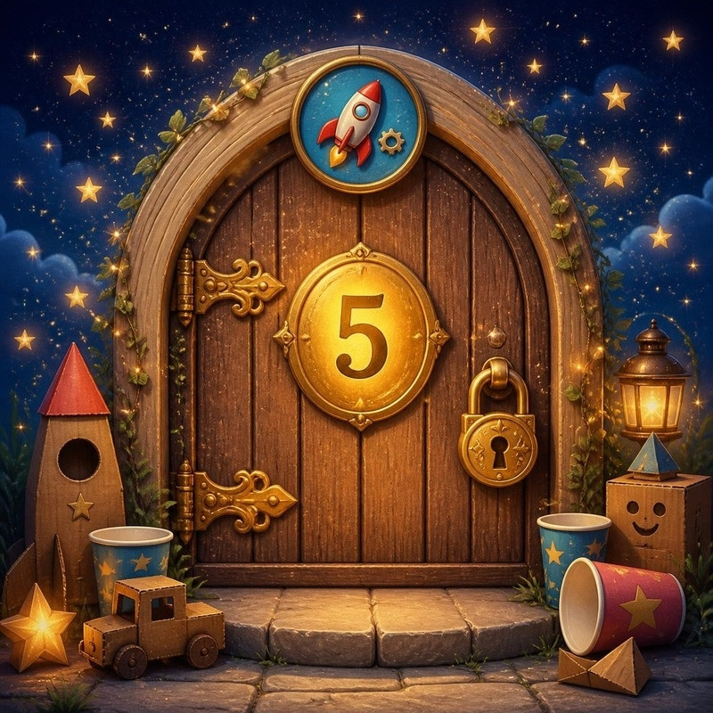
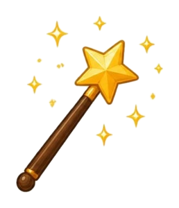
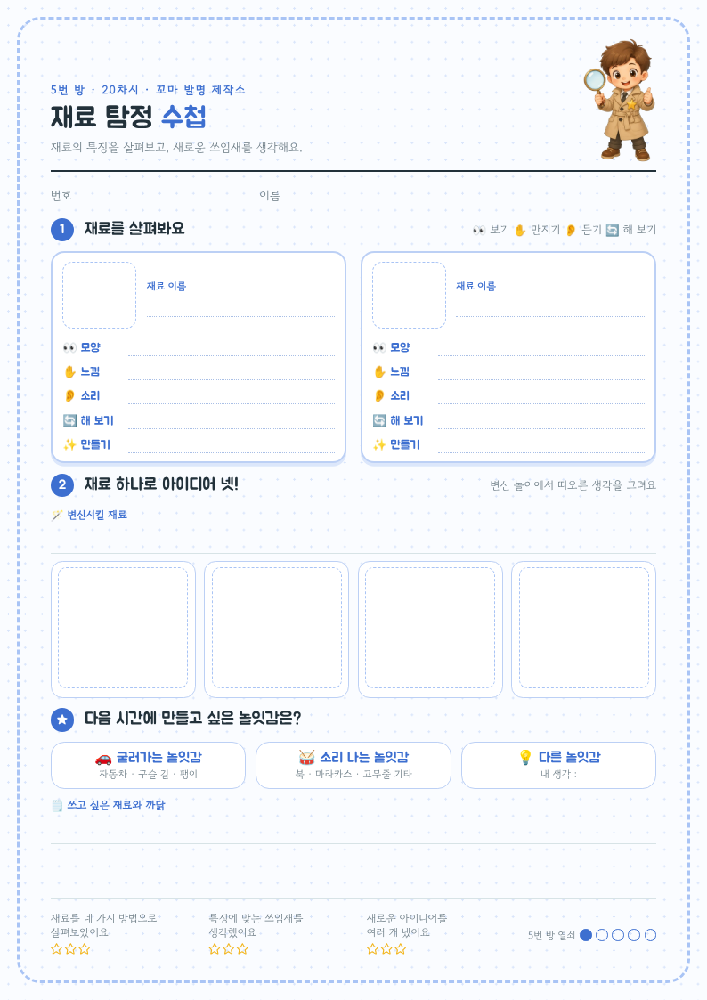

🔐 5번 방 · 직접 만들고 개선하기20차시 / 20~24도입

물건 교과서 · 방 탈출 미션
5번 방 · 20차시
버려지는 물건의
두 번째 인생
버리기 전에, 한 번 더 살펴봐요.
지난 미션 돌아보기
작은 생각도 실제로 바꾸면
모두의 하루가 편해져요.
🧻 준비물 확인! 깨끗한 재활용품을 가져왔나요?
20물건의
두 번째 인생
21놀잇감
설계 연구소
22나만의
놀잇감 제작소
23실패해도
괜찮아!
24튼튼한
물건의 비밀
MISSION BRIEFING
오늘의 미션 세 가지
미션 1
재료 탐정
보고 · 만지고 · 듣고 · 해 보고
미션 2
어떤 재료가 좋을까?
재료를 번쩍 들어요
미션 3
휴지심 변신 놀이
이건 휴지심이 아니에요!
보상
열쇠 조각 1
5번 방 첫 조각!
🎯 학습 목표 주변 재료의 특징을 살펴보고, 그 특징을 살린 새로운 쓰임새를 생각할 수 있어요.
MISSION 1
🔍 재료 탐정
재료를 손에 들고 네 가지 방법으로 살펴봐요.
⚠️ 오늘은 찢거나 자르지 않아요. 다음 시간 놀잇감 재료로 아껴 둬요!
MISSION 2
🙌 어떤 재료가 좋을까?
2모둠이 10초 의논 → “하나, 둘, 셋!”에 재료를 번쩍 들어요.
3“○○는 △△해서 좋아요.” 까닭을 말하면 1점!정답은 여러 개! 다른 재료를 들어도 까닭이 맞으면 점수예요.

MISSION 3
🪄 휴지심 변신 놀이
휴지심을 들고 흉내 내며 말해요.
“이건 휴지심이 아니라 ○○이에요!”
🔭 망원경🎤 마이크💍 팔찌📣 확성기🦒 기린 목🚀 로켓🐛 애벌레 몸🎺 나팔🌸 꽃 도장🛞 바퀴
MISSION 정리 · 활동지

🔍 재료 탐정 수첩
1재료 두 가지의 특징을 써요
2재료 하나로 아이디어 넷!
★만들고 싶은 놀잇감은?
SECRET CODE
🔐 5번 방 첫 번째 비밀 문장
재료의 특징을 살펴보면
버려질 물건도 새로운 쓰임이 생겨요.
값새로운특징똑같은
MISSION COMPLETE
🗝️ 5번 방 열쇠 조각 1개!
NEXT MISSION
21차시 예고
놀잇감 설계 연구소
굴러가는 놀잇감? 소리 나는 놀잇감?
🕵️ 집에 있는 장난감이 어떻게 굴러가고 소리 나는지 살펴오세요.